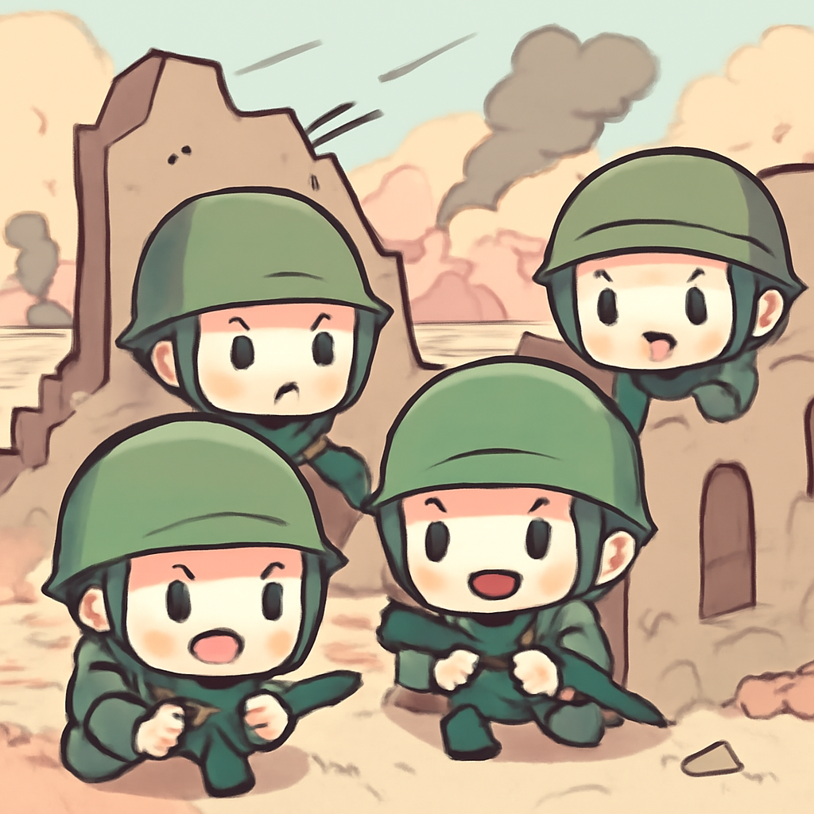

其一 · 尼泊爾 · 尼藏洪水造成數百人失踪
尼泊爾與中國邊境洪水，數百人失踪
在尼泊爾與西藏交界處，最近的洪水與山崩造成了數百人死亡或失踪，許多村莊瞬間被水流沖走。這場災難顯示了氣候變化對這個地區的影響，科學家們警告冰川快速融化可能是罪魁禍首。希望未來能有更好的防災措施，不然連水都不敢信任了。
🔗 原始新聞 ↗
2026-08-28 · 以古觀今，以笑抗愁
尼泊爾與中國邊境洪水，數百人失踪
在尼泊爾與西藏交界處，最近的洪水與山崩造成了數百人死亡或失踪，許多村莊瞬間被水流沖走。這場災難顯示了氣候變化對這個地區的影響，科學家們警告冰川快速融化可能是罪魁禍首。希望未來能有更好的防災措施，不然連水都不敢信任了。
🔗 原始新聞 ↗
俄軍試圖潛入烏克蘭被破壞的大壩區域

在烏克蘭，俄軍正試圖潛入三年前炸毀的大壩水庫，局勢緊張不已。這場戰爭的前線戰鬥如同一場貓鼠遊戲，雙方都在為爭奪控制權而苦戰。這場衝突不僅影響到兩國，更可能波及整個地區的安全局勢，持續關注吧。
🔗 原始新聞 ↗
加拿大汽車盜竊問題因俄羅斯制裁惡化
最近，加拿大的汽車盜竊問題變得嚴重，因為俄羅斯成為被盜汽車的最大目的地。隨著黑市需求的激增，走私者們如同開了新商機。這不禁讓人想，是否應該把每輛車上都裝個GPS，讓盜賊們也無法安然無恙。
🔗 原始新聞 ↗
丹麥政府通過賠償法案，補償格林蘭女性
丹麥政府最近通過一項法案，將對曾經強制接受避孕的格林蘭女性進行賠償。這是對歷史不公的一次補償，也是對女性權益的重視。這一舉措讓人感受到改變的希望，未來也許會有更多這樣的正義之舉。
🔗 原始新聞 ↗
沙國對胡塞武裝的反應可能引發新衝突
沙烏地阿拉伯面對胡塞武裝的持續攻擊，局勢日益緊張，分析師警告這可能會導致全面衝突的爆發，為伊朗戰爭開啟新戰場。中東地區的緊張情勢讓人難以預測，希望能早日平息衝突，否則又要進入戰爭模式了。
🔗 原始新聞 ↗